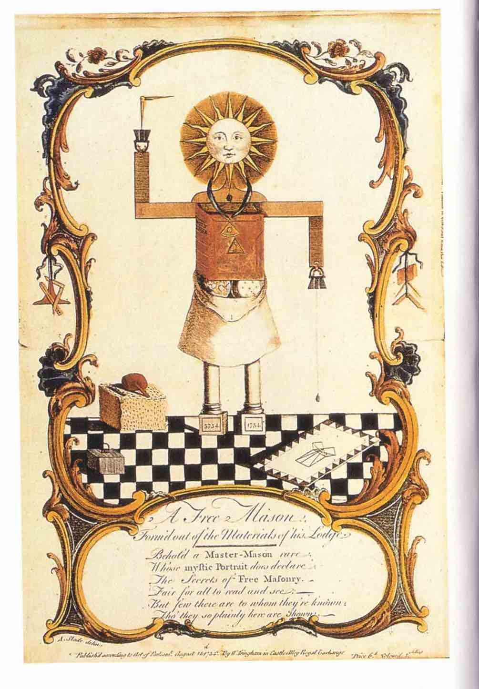

Ну, Арарат, Ратан. Это и есть гора Рога. Это и есть и Пастушевич. У Рога быков и у Гермеса и Хрисос — это и есть они. И все были пастухами. Всё вот так вот, всё в символах.
Арм. Это и есть железо. Арм. Арм. Арм. Ара. Арарат. Ну? Всё наоборот.
Ну? Открыть эту худшую дверь надо. Стучить . Ну, дверь. Ну, дверь. Дверь. Дверь. Дверь в дверь. Дверь в то, что она... Дверь есть дверь. Дверь. Д-д-д-дверь. Как твёрдый знак, чтобы убедительно звучало: как будто есть дверь. И дверь всё открыта.
Ну и ДДР — это и есть мистер Пропер, это и есть лысая башка. Это она... Она и есть лысая. Но она и есть голый. Гуляк. Ну и то есть денег нету. Денег нету. Нету ничего. Но от того, что нет ничего, есть всё? А от того, что есть всё, то и есть инквизиция.
Помимо того, что в ней был Наполеон, то пятница 13-е — это есть и инквизиция. Инквизиция и... Честно, я забыл, то ли Розенкрейцеров, то ли тамплиеров. Оттуда и пошло «пятница 13-е».
Это и есть инквизиция. Ну? Она же и инк... Визитор. Инк визитор. Ну, внутри и всё. Визитор внутри, внутренний очиститель.
Ещё могу. Там много, на самом деле. Сколько даже тут можно, даже, ну, неисчерпаемое.
Ну, можно копать вот в одну сторону. Можно в разные стороны копать. Куда... Сколько там этих... Всё копай. Крот-курот. Ну, это и есть короткое замыкание. Это и есть провод. Это и есть бамбук. Курить бамбук.

Рис. 5. Крот-курот
Н
НОЯБРЬобразный ряд VI
31-е — это и есть ноябрь. Ноябрь — это и есть ноябрь. Нои. Ноябрь. Нои — это и есть гора Арарат. Ратан.
Это и есть две руки, две ноги, это и есть шесть пальцев. Один отрубили. У меня и... Ну, мне скоро нужно их найти обратно. У всех сначала было 6 пальцев. Сначала было 6 пальцев. 6 и 6 — это и есть... Это и есть 12. Это и есть... Плюс 1 будет 13 пятницы. Пятница — это и есть 5. 5 пальцев. 5 и 5 — 25. Ну... Это и есть 1/4 сотни. 1/4. 1 и 4. Ну, 1 минус 4 будет 3. Это и есть 1 и 3.
Робу. Робочего. Роба. Роба. Снимаем робу обратно. Всё, в спячку, в дрёму, в люльку. И по кругу. Ну, разминаем кости, приседаем. Обратно. Обратно. Обратно. Обратно. Я бы не успел оклематься, чтобы ничего не это, не это... Только когда критическая поломка будет, тогда . Так. Оберегаю ещё, чтобы не слетел. А то никуда подальше. Угу . Как же это... Да.
Рис. 9. Роба
С
СИМВОЛобразный ряд X
А на той стороне, в тёмно-синем огне, есть страна фиолетовых фей. Я сейчас это говорю, я же прекрасно... Ничего никто не понимает, что я тут говорю. Это, то есть, даже... Ну, то есть, вещи настолько глубокие, ну, многополярные настолько ... И многосторонние, много боков, много символов. Это и есть символ. 1 и 2 — это и есть 2. Это и есть две стороны. С двух сторон.
Ну? Циркулируй. Циркуль. Лируй. Ну и циркуль-то есть циркулировать. Мне не спец... Мне не случайно в плечо в начальной классе циркуль заехали. Заехали. Циркуль в плечо. Это знакомая одна... Одноклассница. Я не знаю, что я с ней нашёл. Так, прямо в плечо. Ну, это и есть плечку.
Вещь не похожа на другую вещь, а именно есть она. «это и есть». Тринадцатое есть треуголка, ДДР есть мистер Пропер. Связка «это и есть» отождествляет, и всякий и/или следующиц ряд начинается с неё.
Число раскладывается на части и собирается снова в дату 6 и 6 дают 12, плюс 1 дают 13; 5 и 5 дают 25, четверть сотни, то есть 1 и 4, а 1 минус 4 дают 3, то есть снова 1 и 3. Всякое число несёт в себе свою маму.
Слово ломается по слогам, и каждый слог открывает свой ряд: инк-визитор; Ноябрь, Нои, Арарат, Ратан; циркуль, циркулируй, лируй; д-д-д-дверь. Примат фонемы, кабала как кабыла, нежели каббала еврейская.
Образ закреплён в вашем теле, пять пальцев дают 6, шесть пальцев дают двенадцать, циркуль в плече ведёт к Арму и железу. Символ носят сообразно духу крови.
Ряд копают в одну сторону или в разные, как крот-курот. Когда два хода встречаются, происходит короткое замыкание, и открывается дверь. Открывать надо худшую.

 Вылезти на hermeticum.ru
Вылезти на hermeticum.ru